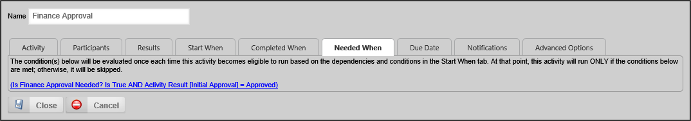

Now that business rule has been created, we can finish configuring the Process Timeline. Open the My Request Approvals Process Timeline. Open the properties for the Finance Approval activity, then click on the Needed When tab to view the properties for it.
The Needed When tab is important to us because we only want the Finance Approval activity to run if the Business Rule we created returns “true”. If the business rule returns false, we want to skip this step completely. The Needed When tab governs the behavior that enables us to skip this activity if the appropriate condition applies.
Click on the link that is labeled “Click to create condition…” in order to open the Conditions For dialog box. In the Conditions For dialog box, click the Add Condition button. Click the Build button to open the Choose System Variable dialog box. From the dropdown menu at the top of the Choose System Variable dialog box, select Business Rules >> Getting Started >> Requires finance approval? Note that the sub-menu named “My Project” is the Group Name you applied to the Business Rule when you created it. Once you’ve selected the business rule, click the OK button to close the Choose System Variable dialog box and return you to the Conditions For dialog box. Once there, you should ensure that the dropdown for the operator has “Is True” selected.
Figure 111: Finance Approval Activity, First Condition
We have one more condition to add to the business rule, because we want to ensure that the request doesn’t get sent to the Finance group for approval if the initial approver rejects the request. If the initial approval authority disapproves the request, then there's no reason for the Finance group to see this request at all.
There are two types of conditions, [OR] conditions and [AND] conditions. [OR] conditions evaluate to true if any condition is met. [AND] conditions only evaluate to true only if all conditions are met. We need to add an [AND] condition to the activity, because we need to ensure that both the amount exceeds $1,000 and the request has been approved by the initial approver. Add an [AND] condition by clicking the Insert an [AND] Condition button located on the left side of the existing condition.
Figure 112: Insert an [AND] Condition Button
In the new, blank condition line, there’s a picker control labeled “Form Field”. We need to change this selection, so click the picker control’s Build Button to open the Choose System Variable dialog box. In the Choose System Variable dialog box, select Process Timeline Activity >> Activity Result from the menu. From the dropdown control labeled “[Select a Process Timeline Definition]” choose “My Request Approvals”. From the dropdown labeled “[Select Process Timeline activity]”, choose “Initial Approval”. Doing so will add an [AND] condition to the Business Rule, immediately below the original condition.
Be sure the Operator dropdown shows “=”, then type “Approved” in the textbox. Once you have done so, click the OK button to save and close the conditions.

Figure 113: Finance Approval Activity Conditions
This will return you to the Finance Approval activity's Needed When tab. At the bottom of the screen, the conditions link should now display, (Is Finance Approval Needed? Is True AND Activity Result [Finance Approval] = Approved)”. Click the Update button to close the options screen and save the Process Timeline's settings. Now, the Process Timeline’s Finance Approval activity, which relies on the conditions you've just set, will only run when the initial approver approves a request that exceeds $1,000.

Figure 114: Finance Approval Completed Needed When Tab
Click Close, then click on the Update button at the top of the Process Timeline to save your changes and close the properties box. Look at the Finance Approval activity, and notice that the Conditions icon is no longer greyed out. Move your mouse over the icon and a tooltip will appear, displaying the condition you just configured.

Figure 115: Timeline Activity Conditions Tooltip
Now that you've built this portion of our sample project, you need to test it before we begin building knowledge views. Navigate to the root folder of the My Project folder. Click to select the check box next to the Travel Expenses Report 2 Form. Next, click the Actions link labeled "Run" to run your new Form.
Fill out the Form and submit it. Once you've done so, you should log out and log back in as different users to run the Form a few times. You can log in as "rick", "eric", and "ron" and submit a Form for each of these users.
The reason we're doing this is so that, when we create Knowledge Views in the next section of the document, we have some submitted forms to find and display in the Knowledge Views.